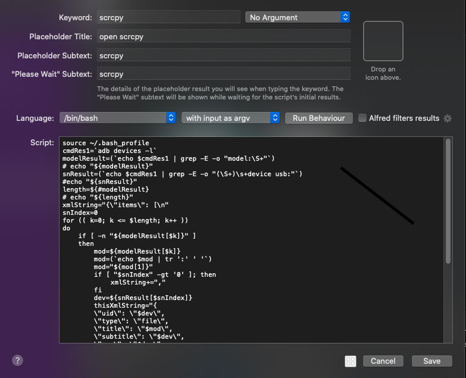
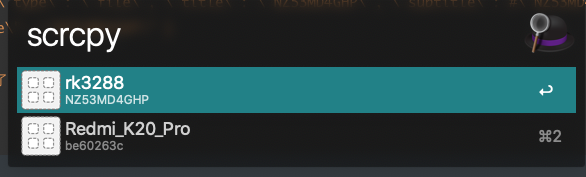
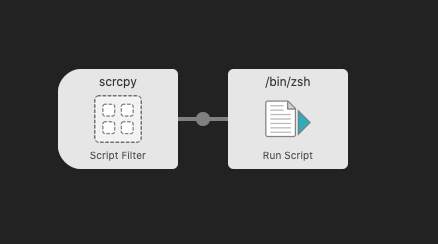
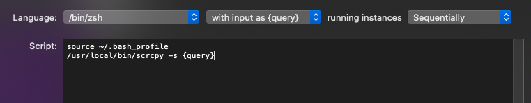

Alfred是MacOS上一个非常强大的效率工具，通过它可以实现很多方便的快捷功能。scrcpy是一款开源的安卓设备投屏操作软件，质量很好且免费。但是在存在多个设备的情况下使用不是很方便，需要先运行adb devices查看设备对应的序列号，复制后再用scrcpy -s 序列号才能启动对应的设备，有了Alfred就方便很多了，可以使用它的Workflow功能很方便的实现多个设备的选择和scrcpy的启动。网上的相关文章不多，讲也没有讲得很清楚，随便记录一下。
实现Workflow
选择 script filter类型，基本设置如图：

执行脚本如下：
1
2
3
4
5
6
7
8
9
10
11
12
13
14
15
16
17
18
19
20
21
22
23
24
25
26
27
28
29
30
31
32
33
34
35
36
37
38
39
40
41
| source ~/.bash_profile
cmdRes1=`adb devices -l`
modelResult=(`echo $cmdRes1 | grep -E -o "model:\S+"`)
# echo "${modelResult}"
snResult=(`echo $cmdRes1 | grep -E -o "(\S+)\s+device usb:"`)
#echo "${snResult}"
length=${#modelResult}
# echo "${length}"
xmlString="{\"items\": [\n"
snIndex=0
for (( k=0; k <= $length; k++ ))
do
if [ -n "${modelResult[$k]}" ]
then
mod=${modelResult[$k]}
mod=(`echo $mod | tr ':' ' '`)
mod="${mod[1]}"
if [ "$snIndex" -gt '0' ]; then
xmlString+=","
fi
dev=${snResult[$snIndex]}
thisXmlString="{
\"uid\": \"$dev\",
\"type\": \"file\",
\"title\": \"$mod\",
\"subtitle\": \"$dev\",
\"arg\": \"$dev\",
\"autocomplete\": \"$dev\"
}\n"
# Append this process's XML string to the global XML string.
xmlString+=$thisXmlString
snIndex+=3
fi
done
xmlString+="]}"
# xmlString="{\"items\": [
# { \"uid\": \"NZ53MD4GHP\", \"type\": \"file\", \"title\": \"NZ53MD4GHP\", \"subtitle\": #\"NZ53MD4GHP\", \"arg\": \"NZ53MD4GHP\", \"autocomplete\": \"NZ53MD4GHP\" }
# ]}"
#最后将结果输出,就可以在列表中选择了
echo -e $xmlString
|
需要注意的点是:
- 不要在脚本中输出非结果json外的信息，因为输出都被当为结果了，如果不是标准的json或者xml就会解析出错。构建输出标准的结果就能实现列表的展示和选项的选择了。
- zsh和bash的效果是不一样的,上面后面修改过的脚本在zsh下就不能生效.

选择的结果会被传入后续的步骤中，这里也选择执行script：


上一步选择的结果被赋值给query变量，直接引用就好了。至此就实现了scrcpy的设备快速选择和启动。用起来也是非常的方便。
打包下载
旧版本: https://wwx.lanzoux.com/iTq7njsq7gb
新版本: https://wwx.lanzoux.com/iRsI2k3lkih
模式都是相同的，根据这个可以实现更多有趣实用的功能。